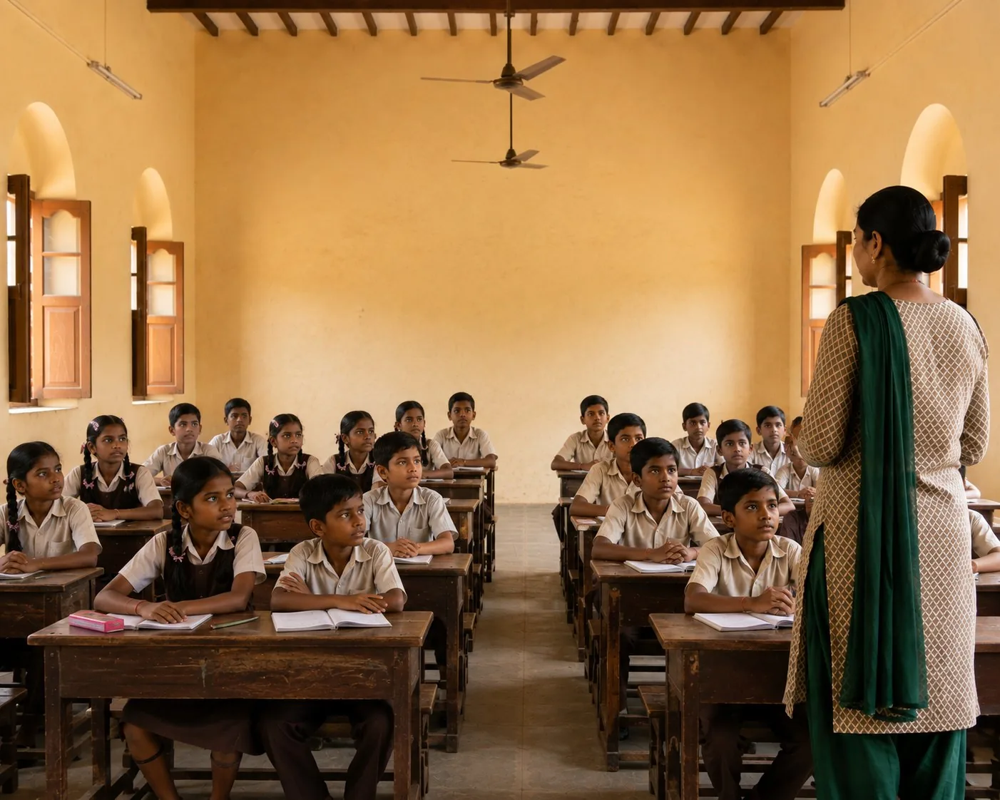

Watch before touching
From a short distance, check for active bleeding, breathing effort and response to sound or movement. A frightened animal may bite even when it normally would not.
The Learning Center
Open only what you need: immediate first response, pain recognition, species-specific signs, field situations, vet handover or legal evidence.

Choose one situation
No long manual. No endless scroll. Open a section, use what matters, then close it. Only one section stays open at a time.
The first 90 seconds
Your job is not to diagnose. It is to spot a threat to life, prevent a second injury, and move the animal with the information a clinic needs.
From a short distance, check for active bleeding, breathing effort and response to sound or movement. A frightened animal may bite even when it normally would not.
Stop traffic, switch off electricity, move shade over heat exposure, or create distance from a crowd. For trauma, support the head, neck and spine on a board, firm cardboard or folded blanket.
Tell the clinic the species, size, exact location, consciousness, breathing, bleeding, suspected cause and arrival time. Calling ahead lets the team prepare.
Do not wait for the animal to look worse when any of these are present.
Especially in a weak, vomiting, breathless, seizing or unconscious animal. Fluid can enter the lungs.
Human painkillers and leftover prescriptions can be toxic or hide signs the vet needs to see.
Not unless a veterinarian directs it. Corrosives, petroleum products and poor consciousness make this dangerous.
Use whole-body support after a road accident or fall. Do not straighten a limb or remove an embedded object.
Wash the wound immediately with soap and running water for 15 full minutes, then seek medical assessment for rabies post-exposure care. Do not wait to see whether the animal develops symptoms.
Interactive pain lab
Start with the validated Feline Grimace Scale for acute pain. Watch an awake, undisturbed cat for 30 seconds when it is not eating, grooming, sleeping or vocalising. Then score what you actually see.
Observe for 30 seconds without calling, touching or offering food. Stress and fear can affect expression, so use the face with behaviour, history and veterinary examination.
No clear facial pain pattern. If behaviour or function has changed, repeat the observation and contact a veterinarian.
A score of 4 or more is the published intervention threshold for acute feline pain. It means veterinary pain assessment is needed. It is not permission to give medication at home.
Species-specific observation
Select the animal in front of you. Each view separates a subtle change, an urgent pattern and a safe next action.
Field decisions
Each guide gives four things: what changes urgency, what you can safely do, what commonly makes it worse, and what information to carry forward.
Breathing effort, active bleeding, consciousness and whether the animal can move all limbs. Internal injury can exist without visible blood.
Keep movement minimal. Slide a board, firm cardboard or folded blanket underneath and support the head, neck and spine together.
Do not make the animal walk to prove it can. Do not straighten limbs, press the abdomen or remove an embedded object.
Time of impact, vehicle direction, any period of unconsciousness, vomiting, urination and a short video of breathing before movement.
Rapid panting, drooling, hot skin, vomiting, poor coordination, collapse or reduced response make this an emergency.
Move to shade, use cool water and airflow, and begin transport. Call the clinic while cooling continues.
Do not immerse the animal in ice-cold water. Do not force large volumes of water into a distressed or poorly responsive animal.
How long the animal was exposed, when cooling began, any vomiting or seizure, and any temperature taken safely.
Note tremors, drooling, vomiting, weakness, seizures, breathing change and altered consciousness.
Separate the animal from the substance. Photograph the label, ingredients and remaining quantity. Call a veterinarian immediately.
Do not give milk, oil, salt or a home antidote. Do not induce vomiting unless the treating veterinarian directs it.
Product package, estimated amount, earliest possible time, body weight and any vomit or chewed material in a sealed sample if safe.
Ongoing bleeding, open-mouth breathing, inability to stand, a hanging wing, weakness or lying on the floor all need prompt expert help.
Use a ventilated box lined with cloth. Keep it dark, quiet and away from people and pets. Handle as little as possible.
Do not force food or drip water into the beak. Do not repeatedly open the box to check. Stress itself can be dangerous.
Exact found location, time, suspected collision or attack, and whether the animal moved before capture.
Check warmth, breathing, suck response, injury, diarrhoea, maternal access and whether littermates are affected.
Keep the animal dry, quiet and gently warm while arranging veterinary advice. Record weight if it can be done without delay.
Do not rapidly overheat. Do not syringe milk into a cold, gasping, weak or poorly swallowing neonate because aspiration can be fatal.
Weight, last known feed, urine or stool, temperature if taken safely, mother and litter history, and every substance already given.
Sudden swelling, pain, collapse, weakness, drooling, abnormal bleeding or altered breathing can follow a venomous bite. Fang marks may be hidden by fur.
Keep the animal calm and movement minimal. Carry rather than walk it. Go to a veterinary facility immediately and call ahead.
Do not cut, suck, squeeze or ice the bite. Do not apply a tight tourniquet or attempt to catch the snake.
Time and place, a photo of the snake only if taken from a safe distance, progression of swelling and any neurological change.
60-second handover
Fill only what you know. The builder creates a short message that a vet, ambulance or PFA unit can scan quickly. Nothing is uploaded or stored.
Read it once. Correct anything uncertain before sending.
India: law and evidence
Save original files before forwarding them. Record exact place, date and time, the animal’s condition, vehicle or agency details, witnesses and veterinary findings. Keep facts separate from assumptions.
Photograph the dog and landmark, note the vehicle, team or agency, time and destination. The 2023 rules require humane capture, records and release in the same area after sterilisation and immunisation.
Read the ABC rules → Cruelty evidenceKeep the unedited original, one short written chronology, witness contacts, medical record and identifying details. State what the file proves and what remains unknown.
Open the complaint guide → Live assistanceUse the handover above, attach location and one useful photo or short video, and say what help is needed: transport, hospital, wildlife expertise or legal escalation.
Reach the PFA network →Clinical framework informed by the Feline Grimace Scale, AAHA pain guidance, MSD Veterinary Manual emergency guidance, WHO rabies guidance and the Animal Welfare Board of India rules library. This page supports recognition and safer transport. It does not replace veterinary diagnosis or treatment.